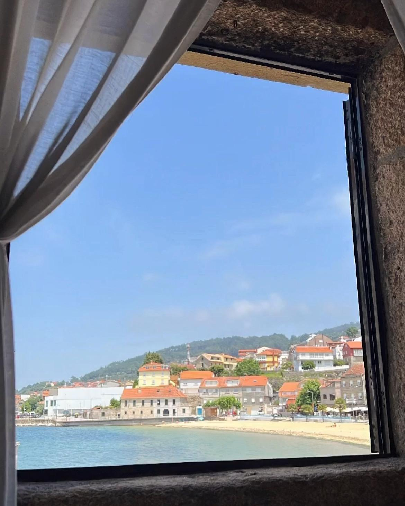
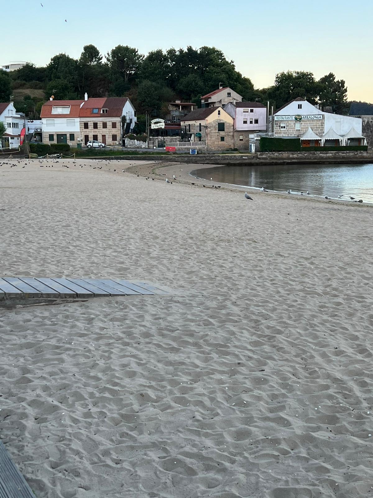

Hace más de medio siglo, en la pintoresca Ría de Vigo, surgió un modesto cobertizo de pescadores que se transformaría en un restaurante legendario. "A Chabola" se convirtió en un lugar icónico a lo largo de sus 50 años de historia, siendo ahora la tercera generación de la familia quienes lo dirigen.
En 1973, Don Francisco, un pescador local, y su esposa, Doña María, abrieron las puertas de su cobertizo al público. Con pasión y conocimiento del mar, se dedicaron a ofrecer los sabores más frescos de la región.
La fama de "A Chabola" creció rápidamente, atrayendo tanto a la comunidad local como a turistas ansiosos por degustar sus exquisitos platos de marisco y pescado. Los hijos de Don Francisco y Doña María, Antonio y Carmen, se unieron al negocio, llevando consigo su amor por la cocina y el compromiso con la tradición.
Con el tiempo, "A Chabola" se convirtió en un lugar emblemático, donde las historias de pescadores y los sabores del mar se fusionaban. El restaurante se renovó, pero siempre conservó su encanto original, recordando sus humildes comienzos.
Hoy en día, la tercera generación de la familia continúa el legado de "A Chabola", combinando tradición y modernidad. El restaurante es reconocido tanto a nivel nacional como internacional, pero nunca ha perdido su ambiente cálido y familiar.
Con vistas impresionantes de la Ría de Vigo, "A Chabola" sigue siendo un destino preferido para los amantes de la buena comida y los apasionados del mar. Su menú ofrece pescados y mariscos frescos, capturados por los mismos pescadores que alguna vez utilizaron el cobertizo.
"La Chabola" ha dejado una huella imborrable en la historia culinaria de Vigo, siendo un símbolo del espíritu emprendedor y el amor por el mar de la familia. Es más que un restaurante, es un legado que celebra la rica tradición culinaria y encanto de la Ría de Vigo.